Custom data processing
While the Incar Skill System already provides some common processing functionality out of the box, it would be impossible to cover every single usecase. Luckily, it is not that difficult to extend the data processing pipeline! You can write an extension containing a ProcessStep subclass, allowing you to process your data at various places within the processing pipeline.
# ensure that your python venv is sourced
incar create_pkg --name [package_name] --processing [path]
# ensure that your python venv is sourced
incar create_pkg --name [package_name] --processing [path]
Ensure that the package name is unique to avoid conflicts with other extensions. path is the location where the extension will be created.
Defining a process step
Let's take a look at the commented template that is now generated for you:
| [package_name]_processing/steps.py | |
|---|---|
1 2 3 4 5 6 7 8 9 10 11 12 13 14 15 16 17 18 19 20 21 22 23 24 25 26 27 28 29 30 31 32 33 34 35 36 37 38 39 40 41 42 43 44 45 46 47 48 49 50 51 52 53 | |
Success
if possible, put the actual data transformation in a separate function called e.g. operation that the other hooks can call. This way you can maintain consistency in your data processing and reduce hard to catch bugs.
Tip
note that we can modify the whole frame or frames dictionary in place. That means we can also add new features based on other features.
Pipeline hooks
The following hooks exist to add a processing step:
DATASET: This hook can be used when a process step has to be applied to the whole dataset, prior to starting training (a copy of the dataset is always made before any processing occurs). Ideal for e.g. sampling the data to some dt, or downsampling video data.GET_ITEM: This hook is applied during training when retrieving a batch. Ideal for e.g. applying noise transformations to video data.GET_ITEM_VALIDATION: This hook is applied when retrieving a batch for validation during the training process.OBSERVATION: This hook is applied to incoming observation data during inference.POST_INFERENCE: This hook is applied to the sequence of actions that results from each inference.TELEOP_COMMAND: This hook is applied to every single user teleoperated command that is being sent to the robot. Ideal for e.g. gains or limiting (gains and limiting are configured by default)INFERENCE_COMMAND: This hook is applied to every single predicted command that is being sent to the robot. Also Ideal for e.g. gains or limiting.

A process step can be added to multiple hooks, so that behaviour stays consistent. For example, a downsample_video step can be added to both the DATASET and OBSERVATION hooks, to ensure the exact same data processing is achieved for training and inference.
Note that the steps for all hooks except for TELEOP_COMMAND and INFERENCE_COMMAND are part of the policy settings, and thus defined in the policy configs. Steps that hook into TELEOP_COMMAND and INFERENCE_COMMAND have to be added to the workspace_config.
Examples
This might be a bit abstract, so for a better understanding take a look at the following examples to get inspiration and a further understanding:
Using a processing step
Create an extension containing the processing step implementation. Then pip install the extension.
Now, the step can be used just as any other processing step already included in the Incar Skill System. For example, the step above can be used by including the following in your training config:
{
"policy" : {
"preprocessing": {
"steps": [
{
"type": "sample_dt",
"dt": 0.1
},
{
"type": "downsample_video",
"features": ["wrist_cam"],
"new_size": [240, 320]
},
{
"type": "my_step",
"feature": "specific_feature",
"other_settings": ...
}
...
],
...
},
...
},
...
}
Note
Even though we set the default hooks, we can override them in the config:
{
"type": "my_step",
"hooks": ["GET_ITEM"],
"feature": "specific_feature",
"other_settings": ...
}
The type value is the same as defined in the @ProcessStep.register_subclass() wrapper, and all other available fields are the fields as defined in the ProcessStep subclass you created. In this example, that is feature, hooks and other_settings. If a field is not set, it will use the standard value as defined in the ProcessStep subclass.
Warning
steps that use the hooks TELEOP_COMMAND or INFERENCE_COMMAND have to be added in the workspace_config.json, as these are independent of the policies
{
"command_processing": [
{
"type": "inspire_gripper",
"hooks": ["TELEOP_COMMAND", "INFERENCE_COMMAND"]
},
...
],
...
}